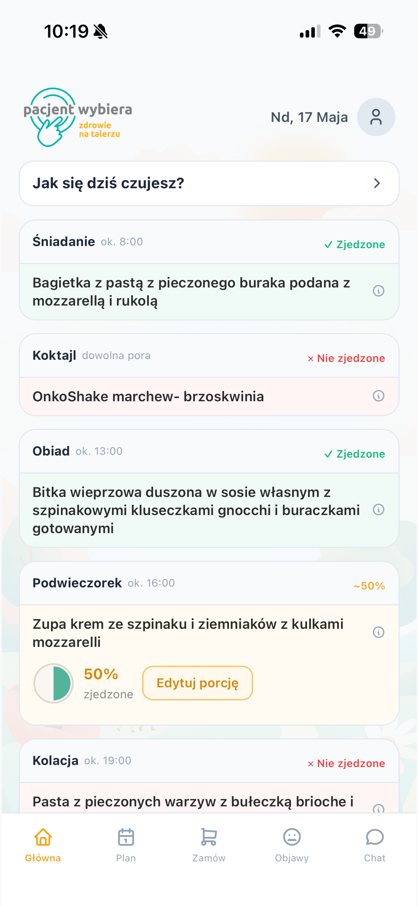
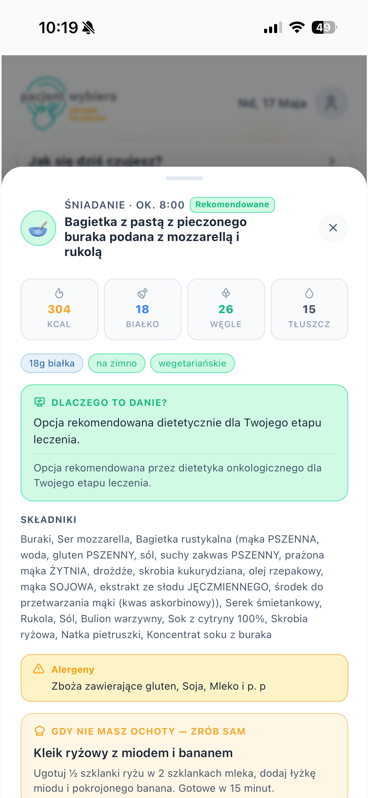
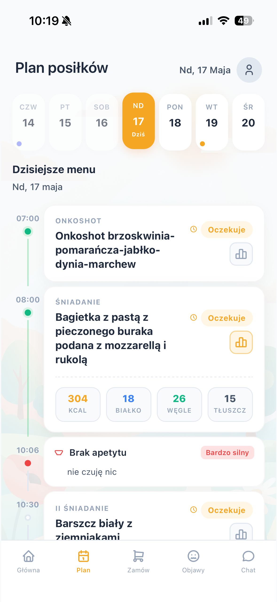
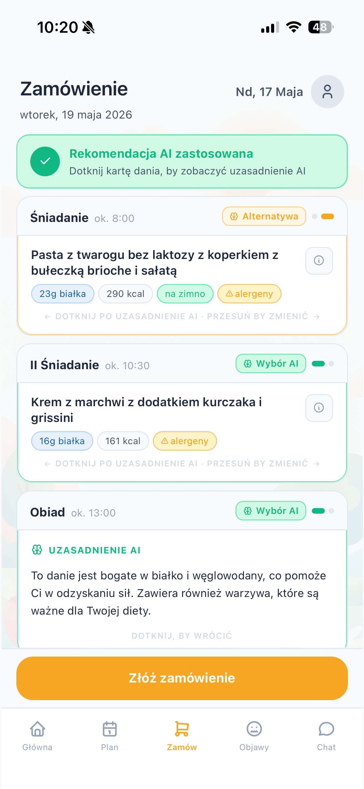
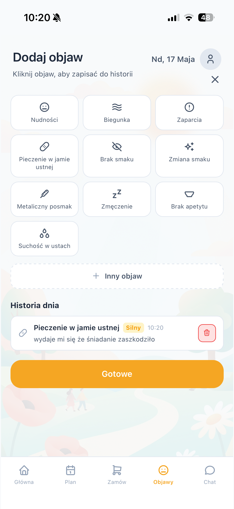
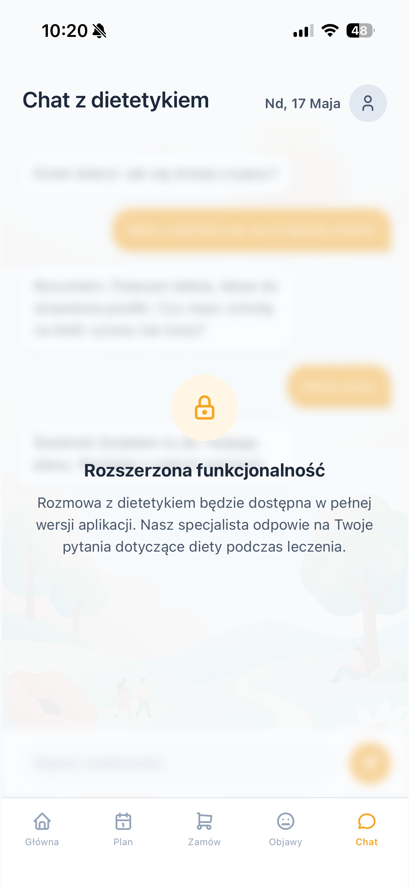
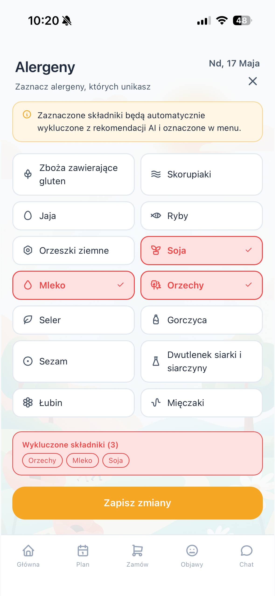

Aplikacja mobilna z rekomendacjami AI dopasowanymi do objawów, etapu leczenia i indywidualnych potrzeb pacjenta.
Otwórz aplikację
Kompleksowe narzędzie do zarządzania dietą podczas leczenia onkologicznego
Algorytm dobiera posiłki na podstawie aktualnych objawów, alergii i etapu leczenia pacjenta.
Przejrzysty harmonogram dnia z informacją o makroskładnikach i statusie każdego posiłku.
Bezpośrednia komunikacja ze specjalistą dietetyki onkologicznej w razie pytań o dietę.
Rejestracja nudności, zmęczenia, braku apetytu — system automatycznie dostosowuje menu.
Zaznaczone alergeny są automatycznie wykluczone z rekomendacji i oznaczone w menu.
Pełna informacja o składnikach, wartościach odżywczych i uzasadnienie doboru dania.
Bo nikt nie zna Twojego ciała lepiej niż Ty sam
Nie narzucamy — proponujemy. Nawet jeśli nie masz siły zjeść zaplanowanego posiłku, aplikacja pomoże wybrać coś lżejszego. Ważne, żebyś zjadł cokolwiek.
Każda rekomendacja jest tworzona z myślą o Twoim samopoczuciu, nie o idealnej diecie. Liczy się to, co jesteś w stanie zjeść dziś — nie perfekcja.
Złe dni się zdarzają. Aplikacja nie ocenia — dostosowuje się. Jeśli dziś dasz radę tylko zupę, to zupa jest idealnym wyborem.
Nudności, brak apetytu, zmęczenie — zgłoś jak się czujesz, a menu zmieni się w czasie rzeczywistym. System pracuje dla Ciebie, nie odwrotnie.
Przesuń w lewo/prawo, aby zobaczyć ekrany

Szczegóły dania
Plan posiłków
Zamówienie z AI
Monitorowanie objawów
Chat z dietetykiem
AlergenyPodaj typ nowotworu, rodzaj leczenia i alergeny — algorytm dopasuje jadłospis do Twojej sytuacji.
Każde danie ma uzasadnienie AI. Możesz je zmienić przesunięciem lub zaakceptować rekomendację.
Oznaczaj zjedzone posiłki, zgłaszaj objawy — system uczy się i coraz lepiej dobiera menu.
Wsparcie dietetyczne dopasowane do Twojego etapu leczenia — dostępne od zaraz.
Otwórz aplikację